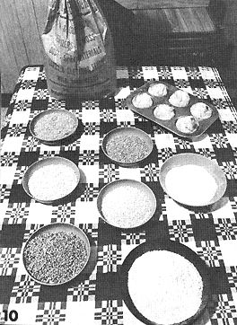

10. With a Corona Grain Mill, you can transform inexpensive, bulk grain direct from the farm or a feed and seed store . . . into piping hot, steamy muffins and other delicious end products - right in your own kitchen. The bowls above (starting at upper left and moving across and down) contain brown rice, buckwheat groats, milled corn meal, barley, millet, wheat and milled wheat.